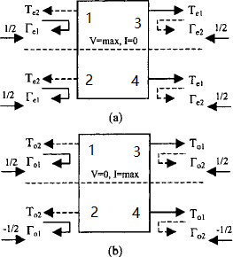

Even and Odd Mode Analysis
Analysis in this section will derive S parameters directly.
Wilkinson Power Divider
It can be normalized as

It is assumed that for even mode $V_{g2}=V_{g3}=2V_0$, and for odd mode $V_{g2}=-V_{g3}=2V_0$.
Apply even and odd mode analysis, where $Z=\sqrt{2},r=2$
For the even mode, the node 2 is matched, so $V_{2}^e=V_0$. By establishing transmission line equation, we have
For the odd mode, the impedance seen to the left of the port 2 is 1, and the power is dissipated at the resistor. We have $V_1^o=0,V_2^o=V_0$.
Quadrature (90◦) Hybrid
S parameter is
Calculation is detailed as follows. It can be normalized as
Apply even and odd mode analysis
For the even mode, we have
and thus
For the odd mode, we have
and thus
Suppose a unit wave of $A_1=1$ presents at port 1, it can be decomposed as $A_o=1/2, A_e=1/2$, and thus
Other ports can be calculated similarly.
Coupled Line Coupler
Its equivalent even-odd mode circuit is
It can be observed that
If we further assume that $Z_0=\sqrt{Z_{0o}Z_{0e}}$, the input impedance is
It follows that $Z_{in}^eZ_{in}^o=Z_{0e}Z_{0o}=Z_0^2$, and $Z_{in}=Z_0$. Hence, all ports will be matched. Voltage at the ports can be written as
Assume that
Several inferences are
With these annotation, we may rewrite $V_3$ as
$V_2, V_4$ are derived as follow.
Those equations lead to
These results can be used to derive the S parameter. If the electrical length is $\pi/4$, we may write the S parameter as in the beginning.
Termination
Thus, we may write
In the case that $C=\sqrt{2}/2, \Gamma_3=-\Gamma_2=1$, we have $S_{11,new}=1,S_{41,new}=0$. Thus, it constitute an all-stop filter, as having been derived using the network parameters. In the case that $C=\sqrt{2}/2,\Gamma_3=\Gamma_2=\Gamma$, we have $S_{11,new}=0,S_{41,new}=-j\Gamma$. This is the result that leads to the design of reflective-type attenuator and reflective-type phase shifter. Note that $\Gamma$ is defined as
Marchand Balun
General Balun
It is assumed that the general balun has the following properties:
- Single-ended port is matched ($S_{11}=0$).
- Differential ports are matched ($S_{22}=S_{23}=S_{32}=S_{33}$).
- The power present at the common port is evenly divided between the two differential ports with opposite polarity ($S_{21}=(1/\sqrt{2})e^{-j\theta},S_{31}=-(1/\sqrt{2})e^{-j\theta}$).
To illustrate the second point, the following schematic is adopted.
For differential excitation at the left side, we have $a_2=-a_3, b_2=b_3=0$. It follows that
The relation between the source and the load reflection coefficients are
If $\theta=0/\pi$, we have $Z_S=(Z_{S0}/Z_{L0})Z_L$, which features an impedance scaling balun; if $\theta=\pm\pi/2$, we have $Z_S=(Z_{L0}/Z_{S0})(1/Z_L)$, which demonstrates an impedance inverting balun.
Requirement of Balun
A variety of three-port balun, when adding an “invisible port 4,” are inherently symmetrical structures. The following structure is considered for analysis.
When the differential and common excitation is applied.

The mixed-mode S parameter can be obtained as
It can be converted to the standard S parameter as
Using Mason's formula, the 3-port S parameter with port 2 terminated with $\Gamma$ is
It must satisfy
which lead us to
Using the following even and odd mode definition, we have
The reflection coefficient is
It can be used to solve for the requirement of balun, as
Marchand Balun Formulation
To prove that Marchand balun is indeed a balun
we need to add a virtual port to facilitate decomposing into even-mode and odd-mode circuits. Note that for the even-mode circuit, the coupled line with short and open termination features an all-stop filter, so that the requirement $T_e=0$ is indeed satisfied.
which leads to
where $Y_p=(Y_{0o}+Y_{0e})/2,Y_m=(Y_{0o}-Y_{0e})/2, Y_{0e}=1/Z_{0e}, Y_{0o}=1/Z_{0o}$.
Since $V_b=0$, the third row and the third column can be eliminated. It follows that
Impedance Inverting Balun

A capacitor is therefore required to resonate out the parasitic inductance. At the PA side, a capacitor is required as
which can absorb the parasitic capacitance of the PA output. As for the reactance at the load side
In that case, the input impedance is
and the input impedance is
Appendix
Mathematica derivation of Y parameter of the Marchand balun
1 | (* This is the Y parameter of the coupled transmission line *) |
Proof of the requirement of the balun
1 | (* Conversion to the standard S parameter *) |
Reference
For the derivation of coupled transmission line, Wilkinson power divider, quadrature hybrid, and coupled line coupled, refer to
- D. M. Pozar, Microwave Engineering. NJ, Hoboken: Wiley, 1998.
For the theoretical analysis of balun, refer to
- K. S. Ang, Y. C. Leong and C. H. Lee, "Analysis and design of miniaturized lumped-distributed impedance-transforming baluns," IEEE Trans. Microw. Theory Techn., vol. 51, no. 3, pp. 1009-1017, March 2003, doi: 10.1109/TMTT.2003.808677.
- Y. C. Leong, K. S. Ang and C. H. Lee, "A derivation of a class of 3-port baluns from symmetrical 4-port networks," 2002 IEEE MTT-S Int. Microw. Symp. Digest, Seattle, WA, USA, 2002, pp. 1165-1168 vol.2, doi: 10.1109/MWSYM.2002.1011855.
For the insightful analysis of coupled line balun, refer to
- H. T. Nguyen and H. Wang, "A coupler-based differential mm-wave Doherty power amplifier with impedance inverting and scaling baluns," IEEE J. Solid-State Circuits, doi: 10.1109/JSSC.2020.2970708.
- Post link: https://triblemany.github.io/archives/c3975ee1/even-odd-mode-analysis.html
- Copyright Notice: All articles in this blog are licensed under BY-NC-SA unless stating additionally.